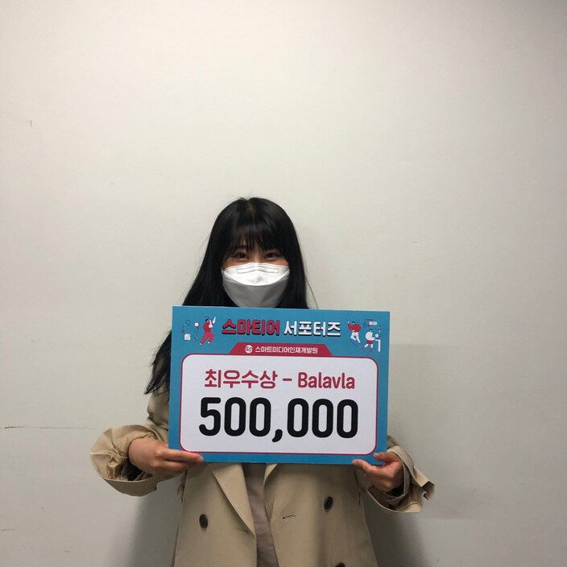

빅데이터 수업을 통해 얻게 된 기회로 스마티어 홍보대사 활동을 할 수 있었는데요!
카드뉴스 제작 미션을 통해 다양한 4차 산업혁명 관련 이슈들에 대해 알아갈 수 있었고, 인터뷰 영상을 찍으며 네이버 파트너스퀘어에서 마치 유튜버가 된 듯한 즐거운 시간을 보낼 수 있었습니다.
자유영상 촬영으로 대전에 있는 로봇카페에도 다녀 오며 팀원들과 더욱 친해질 수 있었고, 그리고 자유 홍보로 학교 도서관에 사물함까지 설치하기도 했습니다!
2개월 간의 짧은 기간동안에도 4차례의 미션을 수행하며 알차고 다양한 경험을 할 수 있었고, 친절하신 스마트미디어인재개발원 홍보팀 쌤들과도 친해질 수 있어 너무너무 즐거웠습니다?
#스마트미디어인재개발원 #광주 #빅데이터 #인공지능 #사물인터넷 #AR #VR #IT #IT교육추천 #국비지원 #무료교육 #좋아요 #취업 #취준생 #강의
